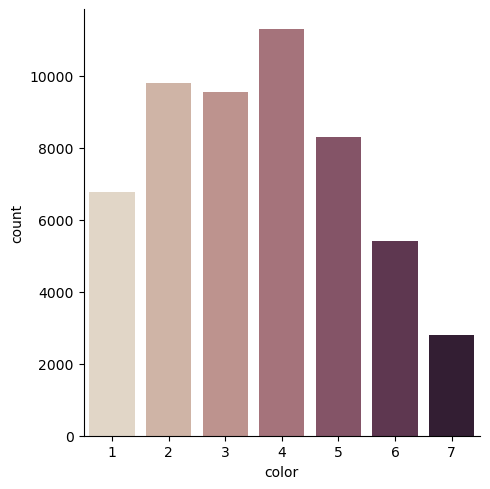

Figure 1: Correlation of Diamond Attributes Heatmap
Project 1: Defining a Problem and Data Understanding
Introduction
Diamond rings, quite literally an investment, will bring you tears before joy. The average diamond ring is estimated at $6,000, but what qualities of a diamond give it its value and thus its price? The size of the stone is a well known contributor, but the four Cs are the major defining features of a diamond ring: color, cut, carat, and clarity. If I had a budget and wanted to maximize the value to price ratio of my diamond ring, I would like to know which of these qualities I should focus on over others. Which feature of a diamond raises its value (price) the most?
For this analysis, I will be using the "Diamonds" dataset from Kaggle, which features the prices, four Cs, and size (x, y, and z) attributes of nearly 54,000 diamonds. The price variable is numerical and in US Dollars. The carat variable, also numerical, is defined as the weight of the diamond and ranges from 0.2 to 5.01 with 5.01 being the heaviest. The cut of a diamond is measured by its quality: Fair, Good, Very Good, Premium, and Ideal. The color of a diamond is ranked from J to D with D being the best. The clarity variable, defined by how clear a diamond is, is measured by another categorical system: I1 (worst), SI2, SI1, VS2, VS1, VVS2, VVS1, IF (best).
Pre-processing
I'll start off by making sure the dataset has no null or duplicated values. As I will be focusing on the cut, clarity, color, and carats of a diamond in this analysis, I will disregard and remove the depth and table variables. I will use the x, y and z variables to create a new feature, volume, which will replace the dimension features. The cut, clarity, and color are all variables with categorical values. For the sake of simplicity, I will be converting them to numerical values, with 1 representing the best values.
Data Understanding & Visualization
The simplest approach to visualizing this dataset is by using a heatmap. Implementing seaborn's heatmap allows us to map out the correlation between every variable in the dataset. Since we're only analyzing the four c's and the price of a diamond, we can see from the map that the carat of a diamond has the most impact on its price, with a 92% correlation. Color and clarity are a lot lower, at 17% and 15%. Cut has the lowest correlation at 5.3%.
Let's take a closer look at each of these correlations.
Figure 2: Cut-Price Jointplot
Using seaborn's jointplot, we are able to visualize the relationship between the four c's and the price of a diamond. Even more, jointplot allows us to simultaneously observe the distribution of each variable. Unfortunately, our datatset is very dense and the datapoints overlap each other, making it difficult to see where the higher and lower concentrations truly are. A boxenplot could help improve the visualization, by showing the quartile values of each distribution while maintaining the shape of each distribution. For example, we can look at the boxenplot for cut and price.
Figure 3: Cut-Price Boxenplot
Strangely enough, the average price of a diamond with an Ideal cut (1/best) is the lowest amongst the cuts, and the average price of a diamond with a Fair cut (5/worst) is the highest amongst the cuts. Why is that? Our jointplot earlier allowed us to see the count distribution of each cut, which was unbalanced. We can take another look using a countplot.
Figure 4: Cut Countplot
There are over 20,000 diamonds with an Ideal (1) cut and less than 2,500 diamonds with a Fair (5) cut. With such an unbalanced dataset, we cannot trust the visualization to be entirely accurate.
The distribution of the clarity variable is similarly unbalanced.
Figure 5: Clarity Countplot
The distribution of the color variable is almost balanced.

Figure 6: Color Countplot
If we disregard the two lowest colors on the scale (6 and 7), then we can see the average price of a diamond is highest for color 5 and nearly the same for the first four colors.
Figure 7: Color-Price Jointplot
Figure 8: Color-Price Boxenplot
While the distribution of the carat variable is also unbalanced, the data seems to be consistent enough for the correlation between carat and price to reflect logical implication.
Figure 9: Carat-Price Jointplot